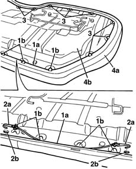
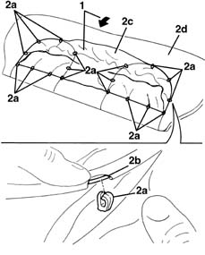

7050D21 Rear seat CUSHION COVER - R.R. with cushion removed
- Path
- Procedures > 70 FITTINGS > 7050 REAR SEATS > 7050D REAR SEAT COVERS/UPHOLSTERY > 7050D21 Rear seat CUSHION COVER - R.R. with cushion removed
- Kind
- repair procedure (removal / refitting; the operation number is the code)
- Applies to
- all engines; all production periods
- Interactive page
- https://sloeber94.github.io/elrnDB-lYpsln/en/#/2429666
Applies to: all engines; all production periods
 Removing
Removing
 Refitting
Refitting1. Fold the cushion over and release the edge (1a) of the cushion cover from the perimeter retainers (1b).
2. Release the hooks (2a) from the rods for the edge of the cover from the seats (2b).
3. Release the edge of the cushion from the remaining hooks.
4. Remove the cover and upholstery (4a) from the frame (4b).

Applies to: all engines; all production periods
1. Release the cover from the perimeter of the upholstery.
2. Using a screwdriver, release the retainers (2a) from the metal wire (2b) for the cover and separate the cover (2c) from the upholstery (2d).

Applies to: all engines; all production periods
Refitting
RemovingCheck that the cover is undamaged.
Position the cover on the upholstery and attach the retainers to the metal wire.
Fit the cover to the perimeter of the upholstery.
Position the cover and upholstery on the frame attaching the edge of the cushion to the hooks and to the perimeter retainers.